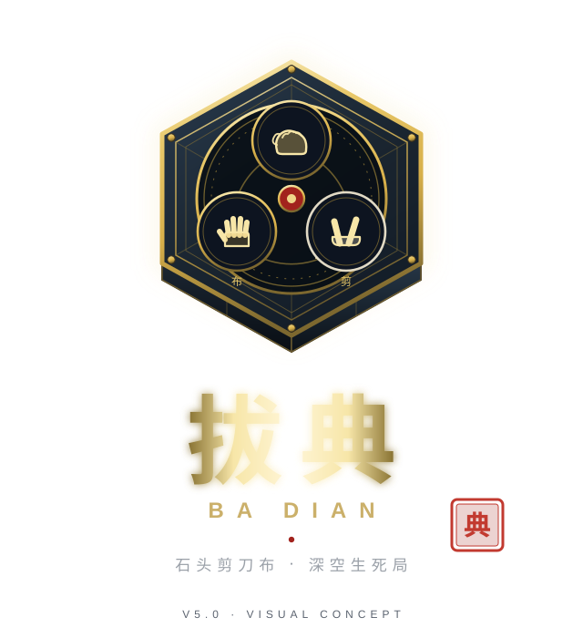

1
竞技场
2
主菜单
3
大厅 / 选角
4
战场交接
BA·DIAN
V5.0 ENTRANCE
STEP 01 / 开场
减少动态
跳过开场
→

石 台 之 上 · 一 决 生 死
拔 典
石头 · 剪刀 · 布
每一种棋子，都藏着一种活下去的方式。
01
创建房间
→
02
加入房间
→
03
玩法说明
→
点击角色，他会回应你
◉
轻触吹箫哥
← 返回主菜单
房 间 邀 请 码
9 5 X 4
本地模拟 · 未接入房间协议
房主准备
开始选角 →
CHAMPION 01 / 11
吹箫哥
远 音 · 吹 奏 者
远程 · 只攻异房间
血 3
攻 1
被 动
技 能 / 机 制
战 斗 特 点
选 择 出 战 角 色
MODEL · 3D 展示区 / 技能说明 →
↔
在角色上左右拖动可旋转查看
确认出战 →
石头 · 剪刀 · 布 —— 轮到你出拳
模拟对手已就位，由你接手这一手
✊
石头
✌️
剪刀
🖐
布
↩ 重新选角
过 场
载 入 竞 技 场 …